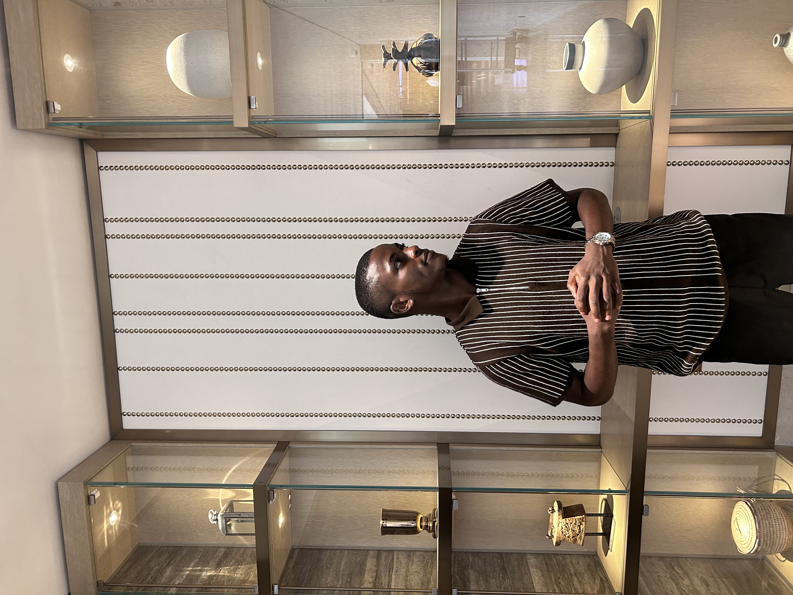

Kayode Uthman

Summary
Tech enthusiast in computer systems, programming, network infrastructure & security. Open to learning.
Education
Bachelor of Science, Telecommunication Science University of Ilorin - (2018-2022)
Work Experience
- Network Technician - Network Operating Center(University of Ilorin) · Internship
November 2021 - November 2022
- Resolved faculties complaints regarding slow or unreliable internet connection speeds.
- Installed and configured new servers, workstations and other equipment as needed in separate faculty buildings.
- Analyzed network performance and identified potential issues with network components.
Skills
- Performance service: ⭐️⭐️⭐️⭐️⭐️
- Computer Hardware & Server Systems Knowledge ⭐️⭐️⭐️⭐️⭐️
- Web Development & Design
- Project Management ⭐️⭐️⭐️⭐️⭐️
- Network Hardware and Software Maintenance
Others